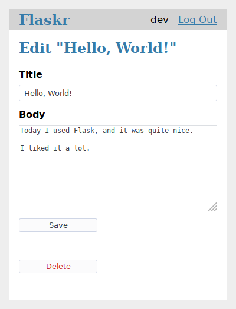

튜토리얼¶
목차:
이 튜토리얼에서는 Flaskr라는 간단한 블로그 애플리키이션을 만든다. 사용자는 사용자 등록, 로그인, 포스팅, 포스트 편집 및 삭제를 할 수 있다. 이 애플리케이션을 패키지화하여 다른 컴퓨터에 깔 수 있다.

파이썬은 이미 잘 알고 있다고 가정한다. 파이썬을 공부하거나 복습하려면 파이썬 문서의 official tutorial이 가장 좋은 방법이다.
이 튜토리얼은 좋을 출발점이긴 하지만 플라스크의 모든 기능을 다루지는 않는다. 플라스크의 기능 전반에 대해서는 바로 시작하기를 참고하고 더 자세한 기능은 문서를 찾아보라. 이 튜토리얼은 파이썬과 플라스크에서 제공되는 것만 사용한다. 다른 프로젝트에서는 작업을 간단하게 만들기 위해 Extensions 또는 다른 라이브러리를 사용할 수 있다.

플라스크는 유연하다. 어떤 특정한 프로젝트나 코드 레이아웃을 요구하지는 않는다. 하지만 처음 시작할 때는 구조화된 방식을 따르는 것이 좋을 것이다. 원래 이 튜토리얼에 템플릿이 필요하지는 않지만 처음 개발하는 사람이 빠지기 쉬운 함정을 피하고 확장하기 쉬운 구조로 만들었다. 플라스크에 익숙해지고 나면 이 구조를 벗어나 플라스크의 유연성을 최대로 활용할 수 있을 것이다.
만약 사용자의 프로젝트와 이 튜토리얼을 따랐을 때의 최종 프로덕트를 비교하고 싶다면 튜토리얼 프로젝트가 플라스크 레포지토리의 예제로 구현되어 있다.
프로젝트 레이아웃으로 계속.